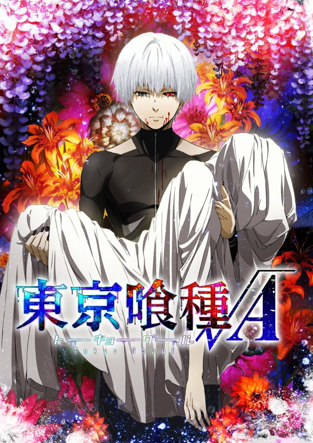

인간과 '구울'이 뒤섞여사는 세상에서 대학생 카네키는 평범한 나날을 보내고 있었다. 죽을 목숨이었으나 놀랍게도 살아난 카네키. 그날부터 그는 '반 인간, 반 구울' 상태의 돌연변이가 되어 인간의 날고기 외에는 식욕을 느끼지 못하고 모두 토해버리는 끔찍한 괴물이 되어버리는데…
등장인물 1. 구울 1.1. 안테이크 1.2. 아오기리 나무 1.3. 카네키 팀 1.4. 피에로 마스크 1.5. :re 1.6. 츠키야마 재벌 1.7. V조직 1.8. 와슈의 왕 세력 1.9. 검은 산양 1.10. 그 외 2. CCG 3. 민간인 4. 외전 4.1. JaCk 4.1.1. 구울 4.1.2. 수사관 4.1.3. 민간인 4.2. Pinto 4.2.1. 구울 4.2.2. 민간인 4.3. Joker 4.3.1. 수사관 4.3.2. 구울 5. 게임 : Jail